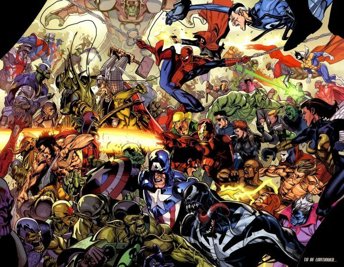

Marvel Comics es uno de los nombres más reconocibles en los cómics. Gracias a ellos, existen superhéroes como Spider-Man, Black Panther y Captain Marvel, además de grupos como los X-Men, Guardianes de la Galaxia y Los Vengadores. Los personajes de los cómics son amados por los fanáticos de todas las edades. ¿Quién no ha visto a alguien usando un disfraz de Marvel durante Halloween, por ejemplo? ¿O en una convención de cómics? Los fanáticos de Marvel a menudo también son apasionados por la rivalidad con DC Comics, debatiendo los méritos de cada uno y por qué Marvel es el mejor. Si bien los fanáticos acérrimos probablemente ya conocen los entresijos de Marvel Comics y el Universo Marvel, hay información útil para el espectador o lector casual en esta introducción.
Siempre es importante celebrar los clásicos. ¡Presentando la corriente principal del Universo Marvel! 1961-1963 fue la "Edad de Plata" de Marvel, marcando una transición de Timely Comics, al nombre de Marvel Comics que conocemos hoy. Los lectores fueron presentados a los creadores Stan Lee, Jack Kirby, Steve Ditko y el Bullpen original, con historias que abrazaron una marca moderna de héroe. ¡Aquí es donde todo comenzó!
